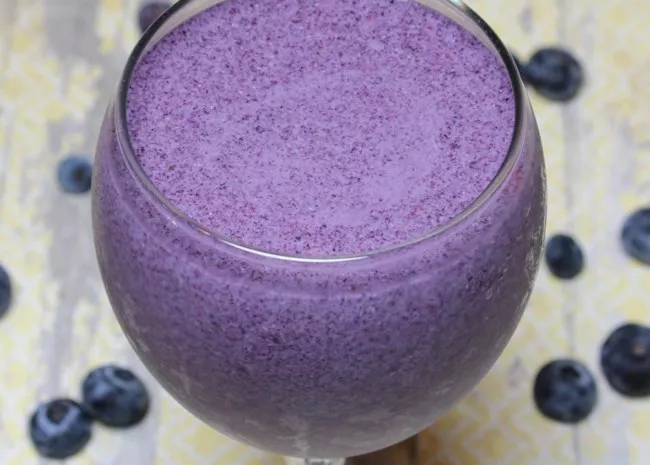

Almond Butter and Blueberry Smoothie

Description
My almond butter and jelly smoothie is a spin-off of 'peanut butter and
jelly' and it is my perfect mid-afternoon snack or sometimes even my
lunch!
Ingridents
- 1 cup almond milk
- 1 cup blueberries
- 4 ice cubes, or more to taste
- 1 scoop vanilla protein powder
- 1 tablespoon almond butter, or more to taste
- 1 tablespoon chia seeds, or more to taste
Steps
-
Blend almond milk, blueberries, ice cubes, vanilla protein powder,
almond butter, and chia seeds in a blender until smooth.
Previous recipe
Home